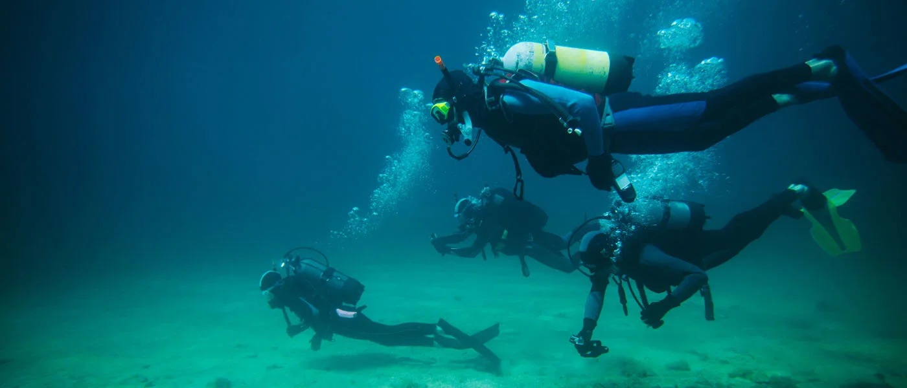
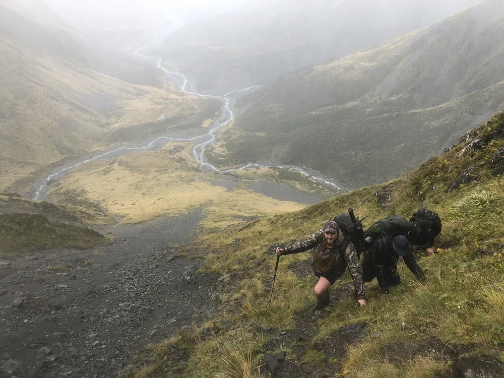

Connecting our serving and ex-service whānau through outdoor adventure.
Rest. Stand. Clear.
Join The CommunityStand With Us. Experience The Outdoors.
We hold monthly events nationwide for all current and former NZDF personnel and their whānau. Our events focus on three core pillars: Mental & Physical Wellbeing, Community, and Skills.
Every event offers varying fitness levels, ensuring you are challenged but supported, regardless of where you are in your transition journey. By engaging in a peer-led environment, our members maintain vital connections.
Whether you're learning a new wilderness skill or refreshing old ones, our goal is to equip you with capabilities you can use independently or alongside your peers long after the event ends.
Join Us


Support The Mission.
100% of your donations go directly to our members and our outdoor operations. As a peer-led charity, we prioritize putting funding towards making our events accessible to all transitioning veterans.
Your support directly enables us to increase South Island events, cover accommodation, and provide vital transportation for members who need to travel out of town to connect with their peers.
Donate Now
The Monthly Dispatch
Sign up to receive updates on upcoming events, community news, and gear drops.